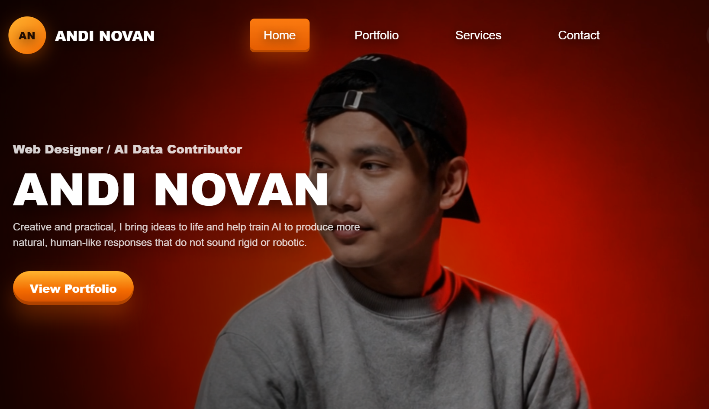
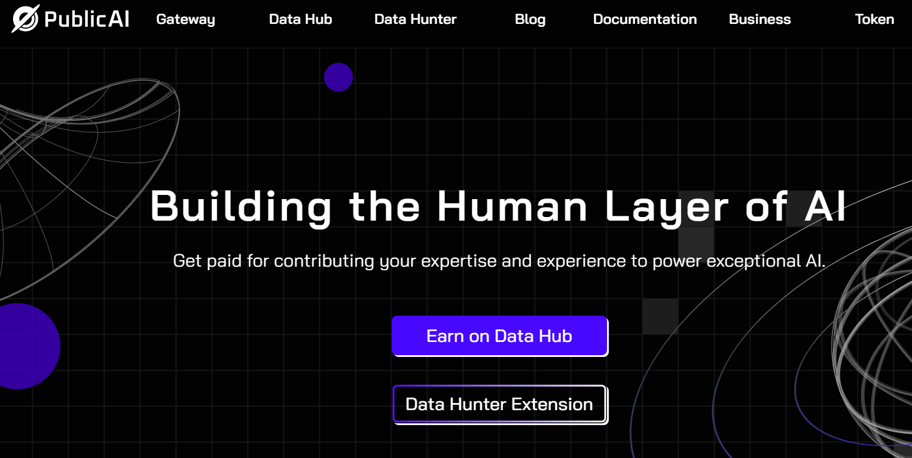

Web Design
Clean, responsive portfolio and business website layouts with strong visual direction.
Web Designer / AI Data Contributor
With a creative and practical approach, I bring ideas to life and help train AI to produce more natural, human like responses that feel less rigid and robotic.
View ServicesAbout Me
I am a Freelancer, AI Data Contributor, and Audio Engineer from Makassar, Indonesia, with experience in audio production and editing, as well as a strong interest in web development and AI technology. As an AI Data Contributor, I focus on evaluating and improving AI responses to make them sound more natural, human like, and less rigid, while continuously developing my skills in HTML, CSS, JavaScript, web design, and creative digital workflows.

Clean, responsive portfolio and business website layouts with strong visual direction.

Data evaluation and response training focused on natural, practical, human like AI output.
Paket belajar membuat website portfolio modern dan sinematik untuk kreator, freelancer, dan profesional.
Checkout produk sudah tersedia.
Buy Now